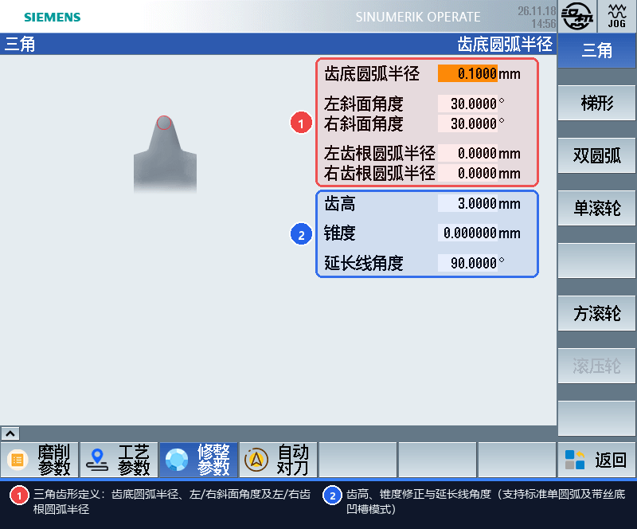
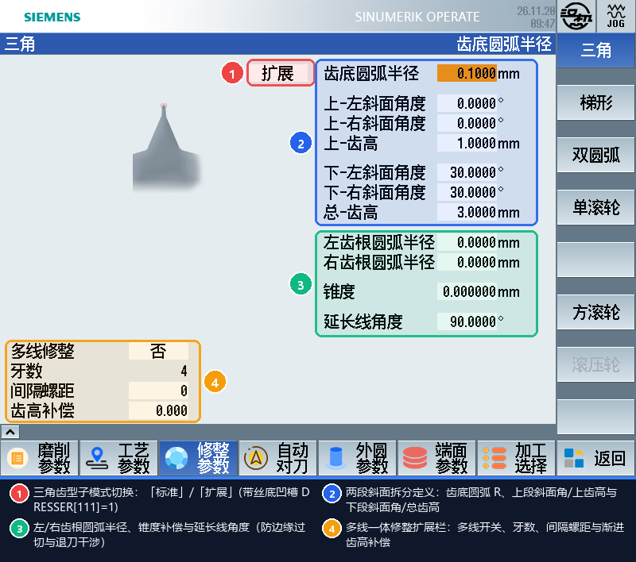
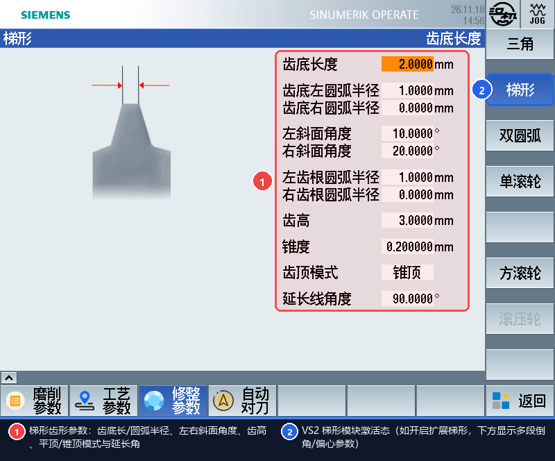
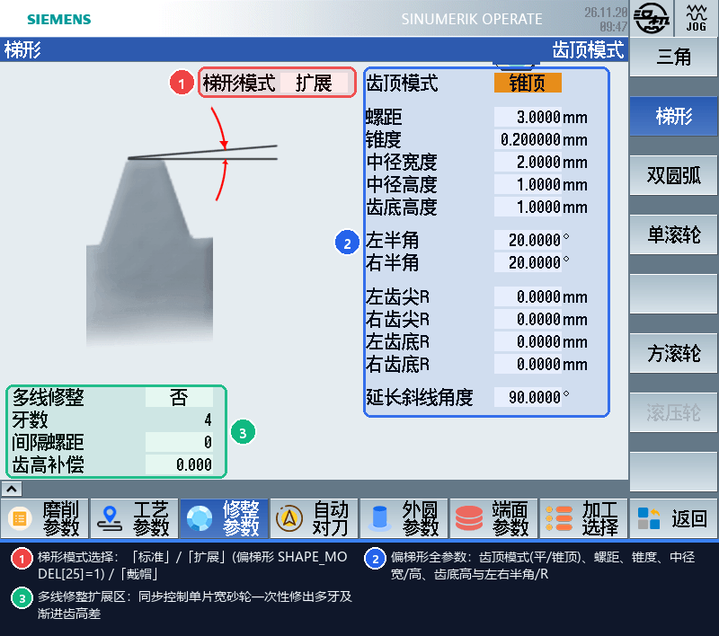
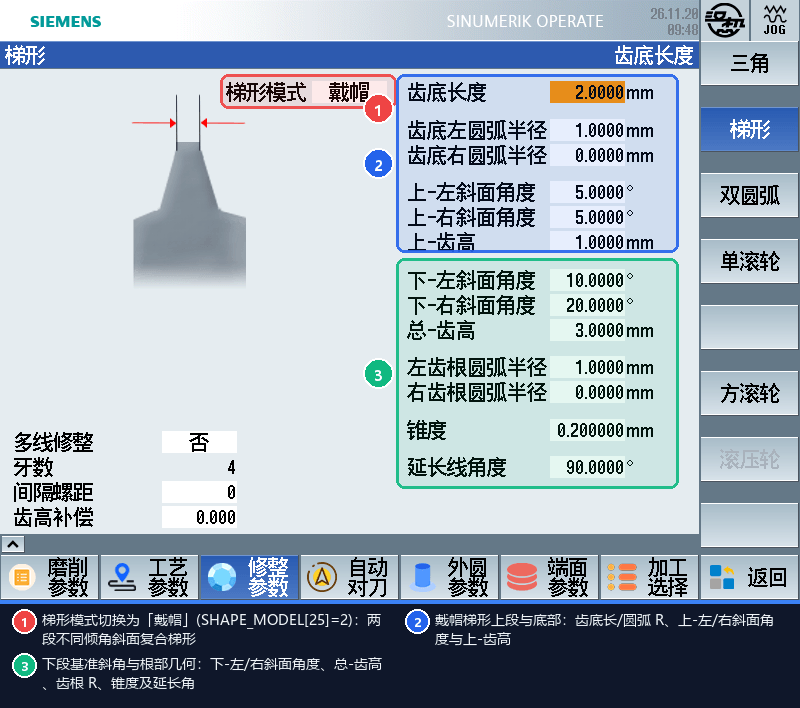
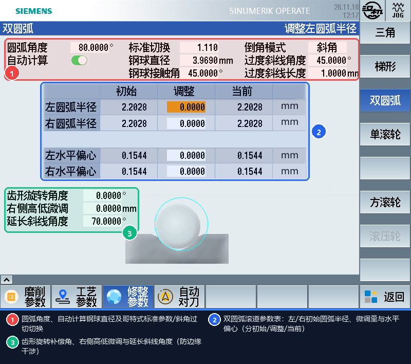
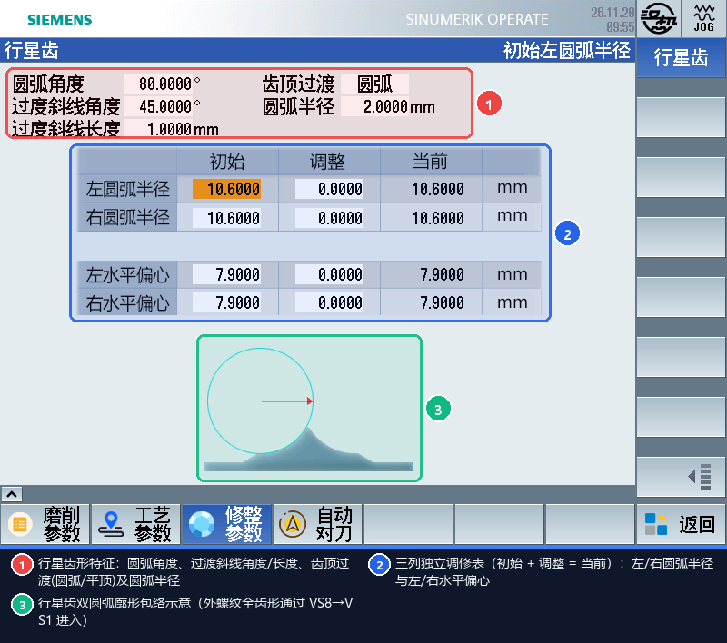
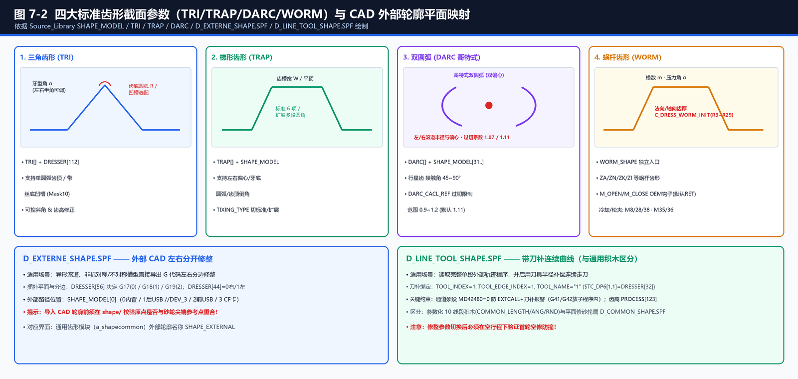

7.3 齿形参数、通用齿形模型与多线/外部轨迹
对于 VW、XZ、XW、UW 等两轴插补修整器，可以在 修整参数 界面点击右侧垂直软键 三角（VS1）、梯形（VS2）、双圆弧（VS3）或下一页 行星齿（外磨）进入 a_shapecommon.com 对应齿形参数页。
1. 四大标准齿形参数详解
变量下标说明：本节括号内标注的
SHAPE_MODEL[...]与DRESSER[...]均为 NC 全局数组（0-based 下标，与MGUD.DEF和Parameter_Index.md一致）；若核对a_shapecommon.comHMI 脚本绑定，请统一按 HMI 索引 = NC 索引 + 1 换算（详见 10.3 节）。
1.1 三角齿形（Mask7 标准 / Mask10 带丝底凹槽）

- 标准三角（
DRESSER[111] = 0）：设置齿底圆弧半径（SHAPE_MODEL[100]）、左/右斜面角度（SHAPE_MODEL[101]/SHAPE_MODEL[102]，与垂线夹角，如60°公制螺纹单边输30°）、左/右齿根圆弧半径（SHAPE_MODEL[1]/SHAPE_MODEL[2]）、齿高（SHAPE_MODEL[103]）、锥度（SHAPE_MODEL[5]）及延长线角度（SHAPE_MODEL[104]）； - 带丝底凹槽（
Mask10，当DRESSER[111] = 1且SHAPE_MODEL[6] = 1时）：拆分为上下两段独立定义上-左/右斜面角度 & 上-齿高（SHAPE_MODEL[105]/SHAPE_MODEL[106]/SHAPE_MODEL[107]）与下-左/右斜面角度 & 总-齿高（SHAPE_MODEL[101]/SHAPE_MODEL[102]/SHAPE_MODEL[103]），专门用于带排屑凹槽或特殊顶角的三角螺纹。

1.2 梯形齿形（Mask8 标准 / Mask1 偏梯形 / Mask3 戴帽梯形）

根据 系统配置 是否打开 SHAPE_MODEL[26] = 1，允许通过顶端下拉框切换三种梯形模式（SHAPE_MODEL[25]）：
0标准对称/等腰梯形（Mask8）：设定齿底长度（SHAPE_MODEL[90]）、齿底左/右圆弧半径（SHAPE_MODEL[91]/SHAPE_MODEL[92]）、左/右斜面角度（SHAPE_MODEL[93]/SHAPE_MODEL[94]）、左/右齿根圆弧 R（SHAPE_MODEL[3]/SHAPE_MODEL[4]）、齿高（SHAPE_MODEL[95]）、锥度（SHAPE_MODEL[11]）、齿顶模式（SHAPE_MODEL[24]：0平顶 /1锥顶）与延长线角度（SHAPE_MODEL[96]）；1扩展偏梯形/锯齿形（Mask1）：按螺距直接输入螺距（SHAPE_MODEL[10]）、中径宽度（SHAPE_MODEL[12]）、中径高度（SHAPE_MODEL[13]）、齿底高度（SHAPE_MODEL[14]）、左/右半角（SHAPE_MODEL[15]/SHAPE_MODEL[16]）、左/右齿尖 R（SHAPE_MODEL[17]/SHAPE_MODEL[18]）、左/右齿底 R（SHAPE_MODEL[19]/SHAPE_MODEL[20]）与延长斜线角度（SHAPE_MODEL[21]）；2戴帽梯形（Mask3）：两段斜面结构，区分上斜面角度（SHAPE_MODEL[97]/SHAPE_MODEL[98]）与下斜面角度（SHAPE_MODEL[93]/SHAPE_MODEL[94]），及上齿高（SHAPE_MODEL[99]）与总齿高（SHAPE_MODEL[95]）。


1.3 双圆弧（哥特式）滚道齿形（Mask9）

广泛用于高精度滚珠丝杠与滚珠螺母磨削，参数表支持“原始图纸值 + 现场修调量 = 当前执行值”的三列分离机制：
| 参数项目 | 原始设定 | 现场调整 | 当前执行（只读叠加） | 说明 |
|---|---|---|---|---|
| 左/右圆弧半径 | SHAPE_MODEL[112] / SHAPE_MODEL[113] |
SHAPE_MODEL[116] / SHAPE_MODEL[117] |
SHAPE_MODEL[80] / SHAPE_MODEL[81] |
实际修整轮廓的左/右圆弧槽半径 |
| 左/右水平偏心 | SHAPE_MODEL[114] / SHAPE_MODEL[115] |
SHAPE_MODEL[118] / SHAPE_MODEL[119] |
SHAPE_MODEL[82] / SHAPE_MODEL[83] |
圆弧中心相对于齿中心线的水平偏心距 |
| 自动计算功能 | DRESSER[39]（0 否 / 1 是） |
标准切换（DARC_CACL_REF，NC DRESSER[112] / HMI DRESSER[113]，范围 0.9~1.2，默认 1.110；紧贴合滚珠滚道常用 1.07） |
输入 钢球直径（SHAPE_MODEL[22]）与 接触角（SHAPE_MODEL[23]） |
开启后自动按下面公式推算初始圆弧半径与水平偏心！ |
双圆弧自动计算官方公式（源自 Horizon-Juicer 内部算法与用户帮助规范）：
其中 为钢球直径（mm）， 为接触角（°）。
- 接触角实测非对称补偿技巧：
齿形旋转角度（SHAPE_MODEL[7]，±5°）：保持两侧圆弧半径不变，将整个双圆弧截面围绕牙顶中心微转一个小角度（正值逆时针，负值顺时针），快速消除左右接触角对称偏差；右侧高低微调（SHAPE_MODEL[89]，±0.2 mm）：不改圆弧半径的前提下单独上下偏置右半侧（正值右抬高，负值右降低）；齿底倒角方式（SHAPE_MODEL[27]）：选0 斜角配过渡 1 斜线角度（SHAPE_MODEL[84]）与过渡 2 斜线长度（SHAPE_MODEL[87]），或1 圆角配齿底圆角半径（SHAPE_MODEL[28]，注意圆角半径需大于滚轮尖端圆弧半径）。
1.4 外磨行星齿与四大标准齿形对照（Mask2）


仅外螺纹在 VS8 下一页 可选：结构同样采用三列左/右圆弧及偏心表（SHAPE_MODEL[30..41]），附加 修整圆弧角度（SHAPE_MODEL[42]，45°~90°）、过渡斜线角度 / 长度（SHAPE_MODEL[43] / SHAPE_MODEL[44]）、齿顶过渡方式（SHAPE_MODEL[49]：0 圆弧 / 1 平顶）、齿顶圆弧 R（SHAPE_MODEL[45]）、中径（SHAPE_MODEL[46]）、小径（SHAPE_MODEL[47]）与 中径接触角（SHAPE_MODEL[48]）。
2. 多线修整、外部轨迹与通用“10 线段积木模型”
- 多线（多牙）一体修整：
- 在三角（开关
SHAPE_MODEL[8]/ 齿数SHAPE_MODEL[9]/ 间隔螺距SHAPE_MODEL[29]/ 齿高补偿SHAPE_MODEL[73]）、梯形（SHAPE_MODEL[74]/SHAPE_MODEL[66]/SHAPE_MODEL[75]/SHAPE_MODEL[76]）及双圆弧（SHAPE_MODEL[77]/SHAPE_MODEL[67]/SHAPE_MODEL[78]/SHAPE_MODEL[79]）界面左下/右下角均设有 多线修整 扩展栏，可一次性在单片宽砂轮上同时修出N个等螺距牙槽，支持间隔螺距与齿高补偿（正值令左侧齿逐个变矮以作渐进切入牙）。
- 在三角（开关
- 外部自定义齿形轨迹（
DRESSER[139]&D_EXTERNE_SHAPE.SPF/D_LINE_TOOL_SHAPE.SPF）：- 当标准三角/梯形/双圆弧无法满足特殊异形螺杆时，在 修整配置 打开
外部齿形参数显示（NC：DRESSER[110]=1/ HMI：DRESSER[111]），可在修整主画面选择调用外挂曲线子程序：D_EXTERNE_SHAPE.SPF（1 = 左右分开修整）：按DRESSER[56]设定的插补平面（G17/G18/G19）分别以DRESSER[44]=0（右半边）与1（左半边）分段切入修整；D_LINE_TOOL_SHAPE.SPF（2 = 带刀具半径补偿的连续轨迹曲线）：按DRESSER[56]选择G17/G18/G19，自动绑定刀具TOOL_INDEX=1/TOOL_EDGE_INDEX=1/TOOL_NAME="1"（$TC_DP6[1,1]=DRESSER[32]、T="1" D=1 M206）与齿高PROCESS[123]走通连续廓形；需注意设MD42480=0（建议将G41/G42置于子程序内以避免EXTCALL开启刀补报警）；- 支持
SHAPE_MODEL[0]（HMI：SHAPE_MODEL[1]）指定存放介质：0 内置、1 后USB（//DEV_3）、2 前USB、3 CF卡。
- 当标准三角/梯形/双圆弧无法满足特殊异形螺杆时，在 修整配置 打开
- 通用 10 线段积木模型原理（
Research/.../CommonShapeUserGuide）：- 底层
D_COMMON_SHAPE.SPF将任意对称/非对称槽型以垂直中心线为准拆成 左 5 段 + 右 5 段（共 10 段）；每段由 长度（COMMON_LENGTH[i]）、与垂直向下方向的夹角（COMMON_ANG[i]）、过渡圆角（COMMON_RND[i]） 三个元素拼装，通过E_COMMON_DARC_ANG、E_COMMON_LINE_TO_ARC等积木子程序自动交点求取与滚轮半径补偿，极大简化非标牙型的定制开发； - 新增 平面修砂轮（
DRESSER[4] = 4→F_COMMON_SHAPE_10.SPF） 时，E_COMMON_SHAPE_CACU.SPF会自动切为非对称单边水平边界（HORI_5_LEFT = 0、HORI_5_RIGHT = -DRESSER[22] - 1），配合DRESSER[141]（平面锥度）生成仅面向砂轮全宽的单斜平面廓形（此时要求对刀起点将 砂轮左端对准滚轮中心）。
- 底层